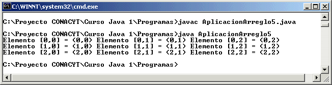

Módulo 6:
Arreglos 
3. Arreglos de Objetos
¿Que es un arreglo de objetos?
Normalmente siempre manejamos un arreglo de números enteros o un arreglo de numeros de doble precisión, pero en Java los arreglos tambien se extienden al manejo de objetos.
Un arreglo de objetos nos permite tener varios objetos de la misma clase agrupados en una manera en la que podemos hacer referencia a ellos por medio de un subíndice (una dimensión) o dos subíndices (dos dimensiones).
Declaración de arreglos de objetos
Para declarar un arreglo de objetos se utiliza el siguiente formato:
Clase nombre_arreglo [] = new Clase [tamaño]; // para una dimension
Clase nombre_arreglo [] [] = new Clase [renglones] [columnas]; // para dos dimensiones
donde Clase es la clase a la que pertenecen los objetos que queremos definir en el arreglo de una dimensión o en el de dos dimensiones.
Uso de los elementos del arreglo de objetos
Para usar los elementos individuales de un arreglo de objetos se usa el siguiente formato:
arreglo[subíndice].metodo(); // para una dimensión
arreglo[subindice1][subindice2].metodo(); // para dos dimensiones
Supongamos que tenemos un arreglo de objetos de la clase Punto de una dimension, las siguientes pudieran ser instrucciones válidas:
Punto arr[] = new Punto [5]; // declarar un arreglo de 5 puntos
arr[3].setX(8); // se define un 8 en X en el cuarto punto (ya que empieza en el cero)
arr[2].setY(-3); // se cambia el valor de Y en -3 para el tercer punto
t2.setText("" + arr[3].getX()); // al texto 2 se le pone el valor de la x del cuarto punto (un 8)
Ejemplo: Tomando la última definición de la clase Punto y escribiendo una aplicación que cree algunos puntos en un arreglo de dos dimensiones tenemos lo siguiente:
Clase Punto
public class Punto {
private int x; // variable para la coordenada en x
private int y; // variable para la coordenada en y
public Punto() { // metodo para construir un objeto sin parámetros
x = 0;
y = 0;
}
public Punto(int x, int y) { // método para construir un objeto con parámetros enteros
this.x = x;
this.y = y;
}
public Punto(double x, double y) { // método para construir un objeto con parámetros double
this.x = (int) x;
this.y = (int) y;
}
public Punto(Punto obj) { // método para construir un objeto con parámetro objeto Punto
this.x = obj.x;
this.y = obj.y;
}
public int getX() { // método que te dá el valor de la coordenada x
return x;
}
public int getY() { // método que te dá el valor de la coordenada y
return y;
}
public void setX(int x) { // método que sirve para cambiar el valor de la coordenada x
this.x = x; // this se utiliza porque se esta utilizando (x) como parámetro y como
// variable de instancia y esto es para que no se confunda
}
public void setX(double x) { // método que sirve para cambiar el valor de la coordenada x
this.x = (int) x; // con un valor double
}
public void setY(int y) { // método que te sirve para cambiar el valor de la coordenada y
this.y = y; // this se utiliza porque se esta utilizando (y) como parámetro y como
// variable de instancia y esto es para que no se confunda
}
public void setY(double y) { // método que te sirve para cambiar el valor de la coordenada y
this.y = (int) y; // con un valor double
}
public String toString() {
return "(" + getX() + "," + getY() + ")";
}
}
Aplicación
import java.io.*;
public class AplicacionArreglo5 {
public static void main(String[] args) {
Punto arreglo[][] = new Punto [3][3];
for (int i=0; i<3; i++) {
for (int j=0; j< 3; j++) {
arreglo [i][j] = new Punto(i,j);
}
}
for (int i=0; i<3; i++) {
for (int j=0; j<3; j++) {
System.out.print("Elemento [" + i + "," + j + "] = " + arreglo[i][j].toString() + " ");
}
System.out.println();
}
}
}
Esta aplicación provocará la siguiente ejecución:

Observamos como el método toString() nos ayuda a visualizar los puntos al desplegarlos en la aplicación.
1. Crea una aplicación gráfica parecida a la de la sección 6-1, en la cual se añaden números enteros, pero aqui deberás de tener un arreglo de una dimensión de objetos de la clase Punto (máximo 100 puntos). Tendrás tres campos texto, uno para poner el elemento del arreglo, y los otros dos para poner el valor de X, o el valor de Y a añadir al arreglo de objetos de la clase Punto. Botón AÑADE deberá añadir el punto al arreglo de objetos, el botón MUESTRA VECTOR, mostrará en el área de texto todos los objetos de la clase Punto, utilizando el arreglo y utilizando el método toString(). El botón LIMPIA VECTOR creará de nuevo el arreglo y el contador de elementos del arreglo lo inicializará a cero. El botón LIMPIA CAMPOS deberá limpiar los campos de texto y el de área.
2. Crea un nuevo botón llamado mayor que al oprimirlo el usuario aparezca en el área de texto el punto con la coordenada mayor (valor más grande en x y el valor más grande en y) y la posición en la que se encontró dentro del arreglo (tomar la posición cero como la primera y así sucesivamente).
http://java.sun.com/docs/books/tutorial/java/data/arraysOfObjects.html